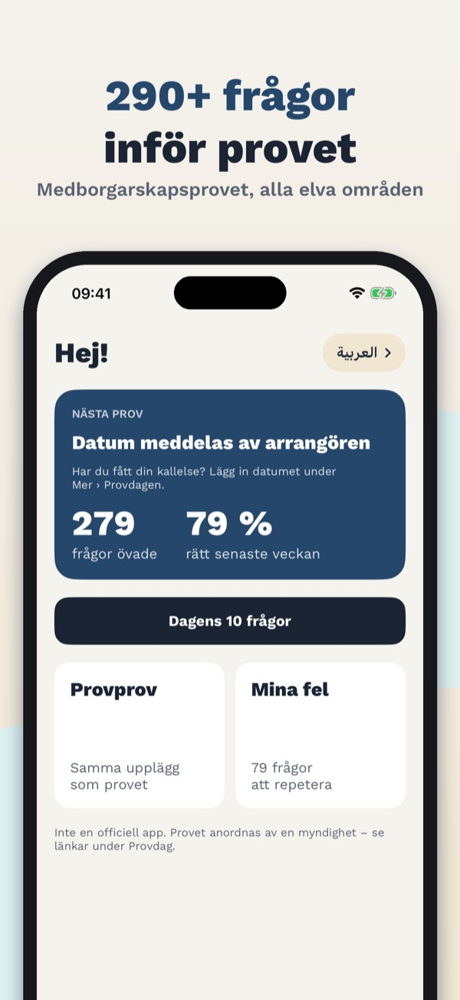
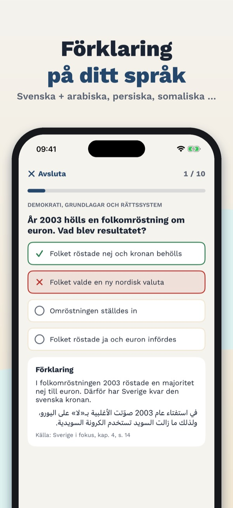
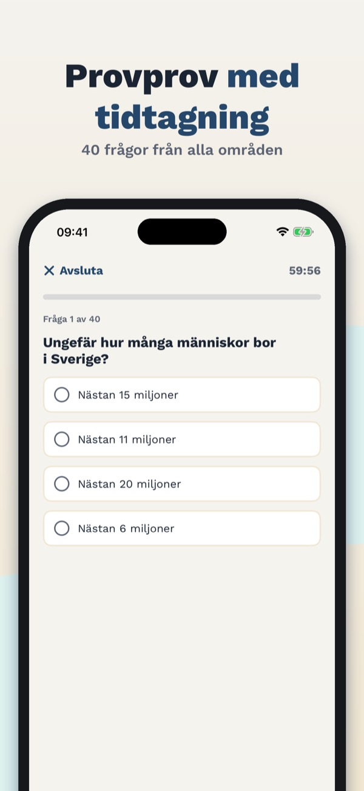
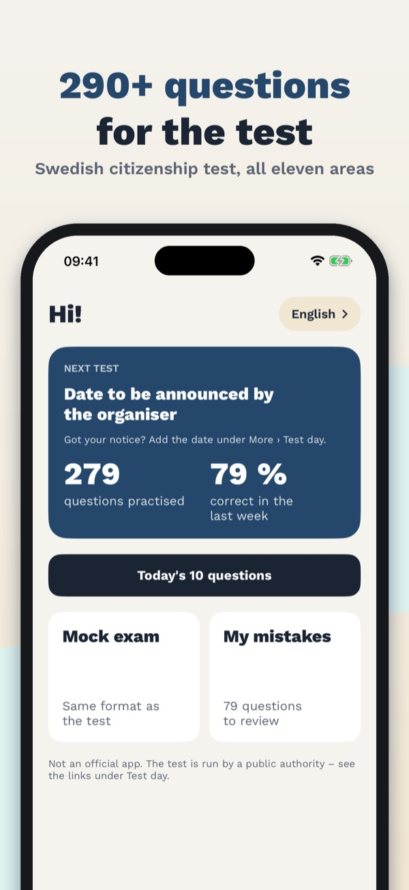
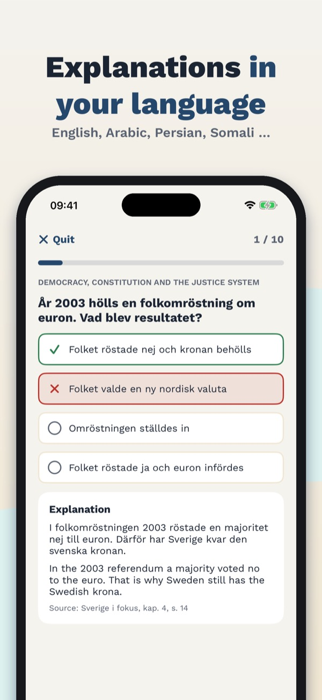
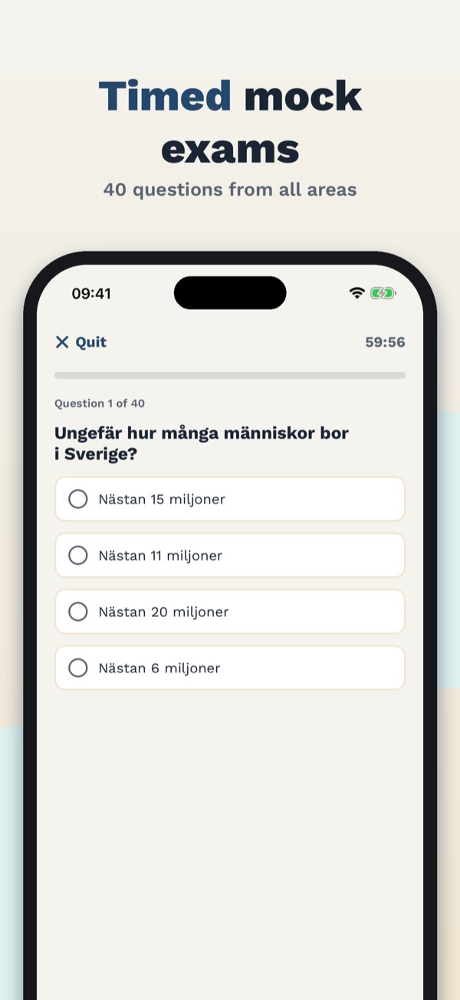

Provklar – medborgarskapsprov
Övningsprov i samhällskunskap
Över 290 övningsfrågor på svenska från alla elva områden, förklaringar på sju språk och provprov med tidtagning. Fungerar utan internet.
Hämta i App Store



Öva inför medborgarskapsprovet i samhällskunskap. Frågorna är på svenska, precis som i provet, och förklaringarna finns också på engelska, arabiska, persiska, somaliska, tigrinja och ukrainska.
Alla elva ämnesområden
- Över 290 egna övningsfrågor med fyra svarsalternativ, som i provet
- Historia, traditioner, välfärd, arbetsliv och privatekonomi, klimat och miljö, demokrati och grundlagar, fri- och rättigheter, religion, mediernas roll, geografi samt EU och internationellt samarbete
- Varje fråga har en förklaring och en källhänvisning till det officiella studiematerialet
Förklaringar på ditt språk
- Frågan på svenska, förklaringen på svenska och på ditt språk
- Arabiska och persiska visas från höger till vänster
Provprov med tidtagning
- 40 frågor från alla områden på 60 minuter, resultatet visas först i slutet
- Resultat per område och genomgång av felen
- Antal frågor, tid och gräns i det riktiga provet är inte publicerade ännu; vårt provprov har en egen övningsgräns
Mina fel och dagens 10 frågor
- Fel samlas och försvinner när du svarat rätt två gånger i rad
- Varje dag tio frågor, de du inte kan först
Begreppskort och sammanfattningar
- 74 begreppskort, till exempel allemansrätten, offentlighetsprincipen och kollektivavtal
- En kort sammanfattning per område
Provdagen
- Från brevet till resultatet: anmälan, legitimation, vad du får ta med
- Lägg in ditt provdatum och få en påminnelse en vecka innan
Engångsköp, ingen prenumeration
- t komplett provprov med tidtagning ingår utan köp. Full tillgång låser upp alla frågor, obegränsade provprov, begreppskort och sammanfattningar. Fungerar utan internet.
Provklar är en oberoende app och inte officiell. Den har ingen koppling till Universitets- och högskolerådet, Migrationsverket eller någon annan myndighet. Frågorna är egna och bygger på fakta i det officiella studiematerialet Sverige i fokus. Provet görs bara på svenska.
Terms of Use (EULA): https://www.apple.com/legal/internet-services/itunes/dev/stdeula/
Privacy: https://baytechbv.github.io/privacy/medborgarskapsprov-se/
Hjälp · Integritetspolicy
Provklar – Citizenship Test
Swedish society exam practice
Over 290 questions in Swedish from all eleven areas, explanations in seven languages incl. Arabic and Somali, and timed mock exams. Works offline.
Download on the App Store



Prepare for the Swedish citizenship test in civics (medborgarskapsprovet). The questions are in Swedish, just like in the test, and every explanation is also available in English, Arabic, Persian, Somali, Tigrinya and Ukrainian.
All eleven subject areas
- Over 290 practice questions written by us, with four options as in the test
- History, traditions, welfare, work and personal finances, climate and environment, democracy and the constitution, rights and freedoms, religion, the role of the media, geography, and the EU and international cooperation
- Every question has an explanation and a reference to the official study material
Explanations in your language
- Question in Swedish, explanation in Swedish and in your language
- Arabic and Persian read right to left
Timed mock exams
- 40 questions from all areas in 60 minutes, the result is shown at the end
- Result by area and a review of your mistakes
- The number of questions, the time and the pass mark of the real test have not been published yet; our mock exam uses its own practice pass mark
My mistakes and today's 10 questions
- Mistakes are collected and removed after two right answers in a row
- Ten questions a day, the ones you don't know yet first
Flashcards and summaries
- 74 flashcards of key Swedish terms such as allemansrätten and offentlighetsprincipen
- A short summary of every area
Test day
- From the letter to the result: registration, ID, what you may bring
- Add your test date and get a reminder one week before
One-time purchase, no subscription
- e complete timed mock exam is included without purchase. Full access unlocks all questions, unlimited mock exams, flashcards and summaries. Works offline.
Provklar is an independent app and not official. It has no connection to the Swedish Council for Higher Education, the Swedish Migration Agency or any other authority. The questions are our own, based on facts in the official study material Sverige i fokus. The test itself is only in Swedish.
Terms of Use (EULA): https://www.apple.com/legal/internet-services/itunes/dev/stdeula/
Privacy: https://baytechbv.github.io/privacy/medborgarskapsprov-se/
Help · Privacy Policy